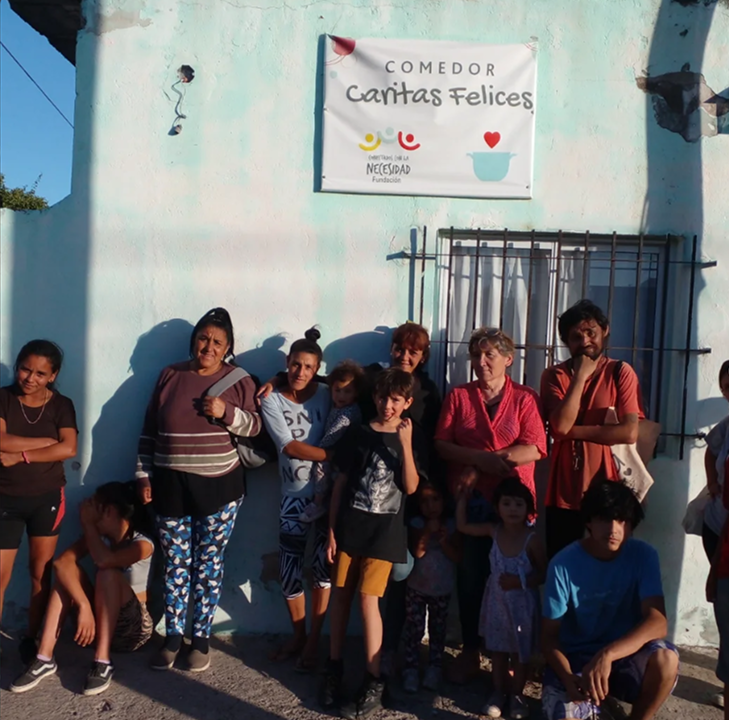
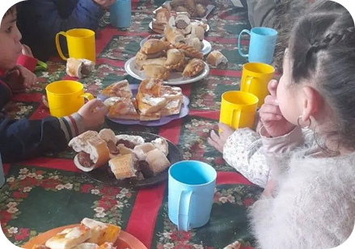
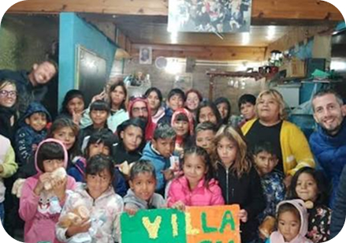
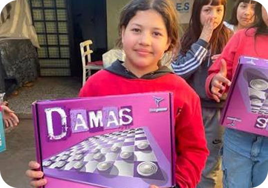
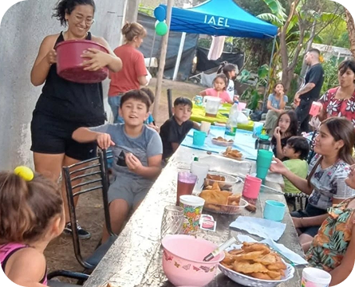
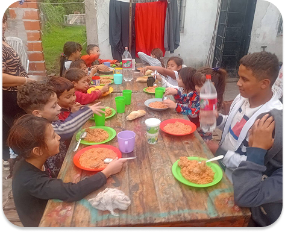
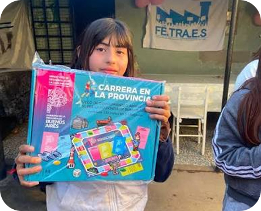

Alimentos
- Alimentos no perecederos
- Alimentos frescos como verduras, carnes y pollo
Alimentar con amor, acompañar con el corazón
Somos un comedor y merendero comunitario de Villa Alba, La Plata. Damos asistencia alimentaria a niños y niñas en situación de vulnerabilidad social.

Nacimos en el barrio de Villa Alba para que ningún chico se quede sin su plato de comida. Además del comedor y el merendero, organizamos colectas solidarias de alimentos, juguetes y otros elementos para los chicos.




Podés ayudarnos con:
Seguinos en Instagram para enterarte de las próximas colectas y actividades solidarias.

Sumamos alimentos no perecederos para acompañar las comidas del comedor.

Reunimos juguetes en buen estado para que chicos y chicas puedan jugar y compartir.
Cada ayuda cuenta y nos permite acompañar a quienes más lo necesitan.
Ubicación
Villa Alba, La Plata
Instagram
@comedorcaritasfelices1
Cómo se construyó la identidad visual y técnica de este sitio.
Caritas Felices es un comedor y merendero comunitario de La Plata que brinda asistencia alimentaria a niños y niñas. El sitio se dirige a vecinos, familias, voluntarios, comercios y organizaciones que quieran conocer su trabajo o colaborar. Su objetivo es visibilizar la tarea del comedor, comunicar sus necesidades y convocar a donar o participar.
En la Etapa 1.2 se analizó el perfil de Instagram del Comedor Caritas Felices, ya que la organización no contaba con un sitio web propio. Sus publicaciones reunían información sobre la tarea del comedor, las personas a quienes acompaña, sus objetivos y las formas de colaborar. A partir de ese relevamiento se identificaron las necesidades de comunicación del proyecto y los contenidos que debía incluir el sitio.
En la Etapa 2, esa información se organizó y se transformó en una propuesta visual. La paleta cálida toma como referencia los colores presentes en algunas publicaciones de Instagram; también se definieron la tipografía y las escalas de tamaños y espaciado. El objetivo fue presentar la información de manera clara, facilitar que las personas encuentren cómo colaborar y lograr que el diseño funcione tanto en mobile como en pantallas más amplias.
--color-fondo-principal#FEF9E3--color-accion-primaria#F6BC3B--color-texto-base#182F25--color-fondo-alternativo#FED06B--color-accion-secundaria#517754--color-texto-alternativo#F28F49--fuenteMontserrat, system-ui, sans-serif--texto-principal3.25rem--texto-titulos2.25rem--texto-subtitulos1.5rem--texto-base1rem--texto-pequeno1rem (16px)--texto-minimo1rem (16px)--espacio-xs4px · .25rem--espacio-sm8px · .5rem--espacio-md16px · 1rem--espacio-lg24px · 1.5rem--espacio-xl32px · 2rem.boton · .boton--primario
.formulario · input
Sumamos alimentos para acompañar las comidas.
.tarjeta · .tarjeta--campana
.encabezado · .navegacion
.pie · .pie__redes
La estructura macro se organiza con CSS Grid: el documento distribuye encabezado, contenido principal y pie; las secciones usan grillas para columnas, tarjetas y datos destacados. Flexbox queda para alineaciones internas de componentes.
Las tarjetas de campaña se colocan dentro de .contenedor-tarjeta, que declara container-type: inline-size. Cuando el contenedor supera 24rem (384px), la tarjeta pasa de vertical a horizontal; en espacios angostos conserva la disposición vertical. Así se adapta al ancho disponible en su columna.
Ajustes del diseño durante la implementación: el mockup de Figma sirvió como guía, pero algunos elementos se reorganizaron al llevarlos a HTML y CSS para mejorar la claridad y la adaptación a cada pantalla. En el formulario de contacto se ordenaron los campos para que resulte claro qué información ingresar; las tarjetas de donaciones —alimentos, ropa, útiles escolares y otros elementos— se acomodaron para facilitar la lectura tanto en web como en mobile. Resolver esa adaptación manteniendo una presentación clara fue uno de los principales desafíos.